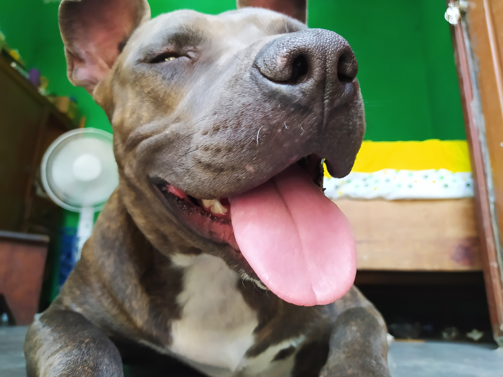

Enfermedades más frecuentes y mortales en perros.
Es muy importante siempre estar atentos a las conductas que presentan nuestros perrihos ya que estás pueden ser señales de que algo no está bien puesto que muchas de las veces los síntomas no son visibles.
Enfermedades más comunes:
-
Otitís
Es una infección en el oído más comun en razas con orejas largas y caídas como el cocker spaniel o el bloodhound, pero puede aparecer en todos los perros que han tenido contacto con la humedad.
-
sarna
Se trata de una enfermedad de la piel que también puede aparecer en los gatos y hasta en las personas. La sarna está causada por unos parásitos microscópicos llamados ácaros que perforan la dermis y la infectan.
Hay dos tipos de sarna más frecuentes en perros: sarcóptica –se contagia al contacto con un animal infectado– y demodécica. Esta última está relacionada a problemas inmunitarios o genéticos. -
Parásitos internos
El grupo más común de ‘gusanos’ que afecta a los perros son las tenias: de forma plana y que se alojan en el intestino alimentándose de la comida ingerida por el animal. El contagio es a través de heces contaminadas o comida cruda o mal cocida.
Es fundamental desparasitar a tu mascota a través del tratamiento que indique el veterinario: no solo los cachorros deben ser controlados, ya que los parásitos también pueden afectar a los adultos. En ocasiones se pueden detectar en las heces. -
Artrosis
Esta es una de las enfermedades frecuentes en perros ancianos y de ciertas razas como el pastor alemán o el dóberman. La artrosis es la inflamación y degeneración de las articulaciones, principalmente de la cadera y el codo.
-
Gastritis
Es más habitual de lo que creemos y en la mayoría de los casos ni nos damos cuenta de que nuestra mascota la está padeciendo. La gastritis es una inflamación o irritación de la mucosa gástrica y es causada por una mala alimentación: pienso inadecuado, raciones demasiado copiosas o rapidez al tragar el alimento.
Enfermedades más peligrosa:
-
Enfermedad de Distemper o moquillo
Es una enfermedad sistémica que daña el sistema respiratorio, los ganglios e incluso el sistema nervioso.
Produce secreción en los ojos, vómitos, diarrea, temperatura corporal superior a los 40º, secreción nasal, trastornos reproductivos, inapetencia, lesiones ópticas y artritis reumatoide. -
Parvovirus canino
Se trata de una afección muy contagiosa que, aunque puede manifestarse a cualquier edad, suele ser más recurrente en cachorros. Es producida por la inhalación del virus a través de las heces contaminadas por el virus parvovirus de otro perro. En caso de contagio, tu mascota mostrará los siguientes síntomas:
-
Diarrea con sangre.
-
Vómitos.
-
Fiebre.
-
Deshidratación.
-
Apatía.
-
Pérdida del apetito.
-
Caída del porcentaje de leucocitos en sangre.
-
-
Cáncer
La causa de esta grave enfermedad es el gusano Dirofilaria immitis y es recurrente en la cuenca mediterránea, dado que las condiciones climatológicas de esta región son las idóneas para su proliferación.
En su etapa más incipiente los síntomas apenas son visibles. No obstante, cuando los gusanos alcanzan el corazón o los pulmones su gravedad ya es severa y se evidenciarán mediante:-
Dificultad para respirar.
-
Tos.
-
Fatiga extrema.
-
Daño hepático.
-
Insuficiencia cardíaca.
-
-
Dirofilarosis
La causa de esta grave enfermedad es el gusano Dirofilaria immitis y es recurrente en la cuenca mediterránea, dado que las condiciones climatológicas de esta región son las idóneas para su proliferación.
En su etapa más incipiente los síntomas apenas son visibles. No obstante, cuando los gusanos alcanzan el corazón o los pulmones su gravedad ya es severa y se evidenciarán mediante:-
Dificultad para respirar.
-
Tos.
-
Fatiga extrema.
-
Daño hepático.
-
Insuficiencia cardíaca.
-
Fotos que demuestran que el pitbull es la mejor mascota
Son cariñosos
Son tiernos
Tu perrhijo es mas que una simple mascota, el es un miembro más de la familia, ¡¡Es tu perrhijo!!

rocky

canela

chato
